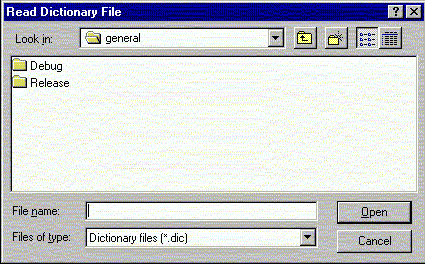

This facility imports a dictionary file. A dictionary file defines the mapping between a residue and atom name into the atom type space (and atom partial charge).

The dictionary file can look like the following:
*Atom dictionary file ALA N 32 -0.35 ALA HN 1 0.25 ALA CA 10 0.00 ALA HA 3 0.10 ALA CB 10 -0.30
It contains a residue name, an atom name and maps these into an atom type in the used force field (CHARMM in this case) and an atom partial charge.
This is one of the possibilities to assign an atom type and an atom partial charge to the atoms.
Line command: see import command
**************************************************************************
LUL/1996
**************************************************************************